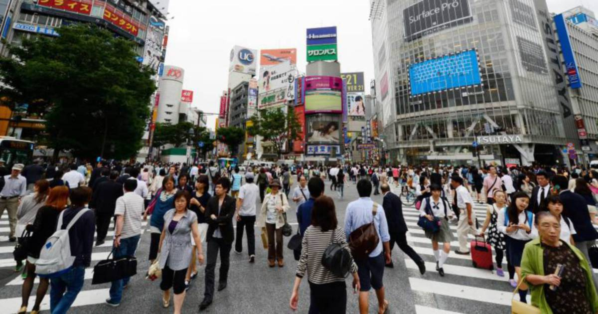
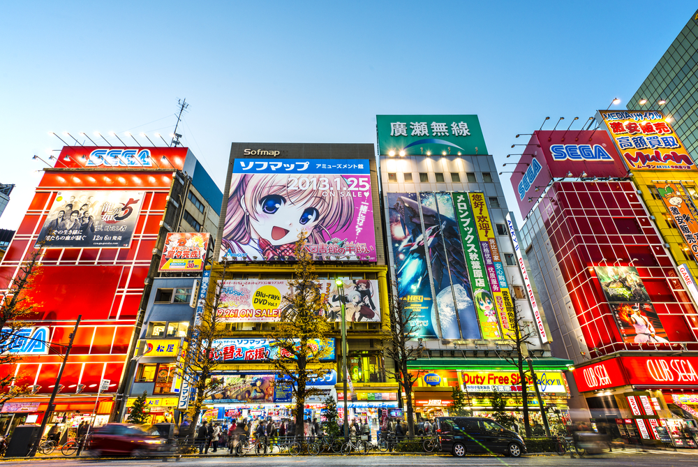

Population Impact
One of the more noticable examples the negative impact human intelligence has had on our world is found in the country of Japan, where not only has it been rapidly decreasing the populaiton, but also shaping the biological needs of humans.

This fact can be generally observed by justr looking at the randomly taken image above, where we are already hinted at the concerning shift in population which japan yields. This, including many other images analyzed, as stated before, show that an overwelming minority of children. From the around about 50 clearly visible humans in the weekend joy above, only around 5 appear to be children.
While this could of influenced by things such as time of day, weekends vs weekdays and location of picture, I believe the consistency of this fact is something we should consider.
Japan currently the highest elder population on Earth, due to the fact there is such a decrease of babies being born and important relationships that are crucial for such. The decreasing birth rate of Japan (read further down to learn about it) is causing the population to slowly change the variety it holds.
Technology cause
One of the main factors that is changing japan's population is their massive entertainment industry, where a constant sea of all types of entertainment capture the heart of the Japanese men and women. Some of the main examples include TV shows, expecially animated ones, games and acting services such as maid cafes. While this may seem to be the norm of most human societies, in Japan, it has been slowly and decreasingly secretly eating on the Rising Sun
Much less technology, but somewhat correlated, is the mental fortitude stress relationship causes from these influences. When images and stories of perfect couples on shows and games surround you, you can only ask yourself: am I capable? A common reasons for these males avoiding real life relationship is the financial and mental stress it may inflict apon them, almost feeling incapable or unqualified.
Impact on Men
Much of the male Japanese population, notably young to mid-aged adults, are what we consider as 'geeks', usually socially inept introverts that in this case, can only love and want to be loved by fictional characters. You may ask: How can this be bad? It's just people living their life... right?
The idea of freedom that we love to express must to taken into limit here, since freedom, a virtue that humans pride on, will be the leading factor that will guide us to our demise.
This very idea of freedom is powered by the hunt for money, for happiness, for the better. While this isn't notably bad in the general sense, Japan has already fallen prey to this silent killer. Artifically created characters are and can be made perfect if it is intended to. So perfect in fact, it steals a place, a very valuable place, in people's (usually males) hearts.
Actually, this cannot be thought of as a Japanese exclusive idea. Anime is now an internation mainstream industry, attraction millions of viewers outside of Japan. This is even lead to most animes developing an English dubbed version along with their English subbed.

The picture above, a group Japanese anime shops; packed with all the anime you can imagine. These clusters of shops are found all over Japan, expecially in the main or more busy marketplaces. This comes to show how big, and how fast the indstry is growing.
/* Odd cafes Section */Odd Cafes
Many things were created in the favour from mainly japanese male desires, such as cuddle and maid cafes. While these things can be thought as ways for people to enjoy their fetishes, for much of the growing intrest in these industries, it is not.
A small amount of these cafes are actaully more like therapy cafes, where many of the participants actually go there to experience the company of a real like female, ones that they have little to no experience interacting with. It can almost be thought of as a training session, where people can experience and learn before they enter the real world.
Actually, many of the workers there know of this issue and are staffed there to help the scrambled minds of these individuals. These high-paying jobs require more than just some social skills and good looks, but the ability to help bring introverted geeks out of their little, dark hole.
Solo Weddings
As stated before we can not mix the lack of relationships in Japan as if they don't want a significant other, it is much more that they can't. A good example of this are solo weddings, which no unusually, are mainly found in Japan. A wedding is an once-in-a-lifetime experience, something that most people look forward to having in their life. With the desire but the incapability of experiencing a true wedding, hundreds if not thousands of clients has signed up for one. They even offter temporary 'boyfriends' in the replacement for a real husband in the solo weddings.
Look at the picture above, we can see that a solo wedding actually includes most, if not all of the things a normal wedding would include. A list of these things are:
- A Banquet, usually with a professional 'banquet sensei'
- A hotel with a wedding car escorts
- Full photo shoot with photos
Attempts to help
Julian, a western, more specifically French, person living in Japan, took note of this issue and decided to help through a very unqiue dating event: Masquerade Parties. In this unsual get together, people would wear masquerades, dance, and have fun. Through this, singles mingle and hopefully, increase the amount of couples throughout Japan.
As strange as this might seem, it as been actually quite successful, where Julian is already about to create dozens and maybe even hundreds of mixed couples (French and Japanese).